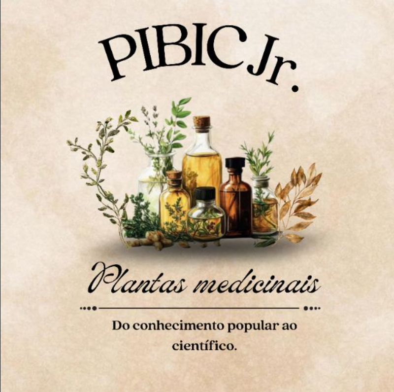

Identificação
- Nome popular
- Aroeira / aroeira-vermelha
- Nome científico provisório
- Schinus terebinthifolia Raddi
- Família
- Anacardiaceae

PIBIC.JRHERBÁRIO DIGITALAPARÊNCIA
Escolha o visual de todas as páginas.
EFEITOS VISUAIS
Folhas, partículas, animações e movimento do fundo.
Suas escolhas são guardadas neste navegador e aplicadas em todas as páginas do site.
Schinus terebinthifolia Raddi
IDENTIFICAÇÃO PROVISÓRIAUma espécie marcante da flora brasileira, reconhecida por suas folhas compostas e pelos pequenos frutos avermelhados. Conheça uma representação interativa e os principais aspectos de sua identificação.
LABORATÓRIO VISUAL / EXPERIMENTO 01
ANOTAÇÕES DO HERBÁRIO
Espécie arbórea ou arbustiva, geralmente com folhas compostas pinadas, pequenas flores e frutos arredondados que amadurecem em tons vermelhos ou rosados.
Várias plantas chamadas “aroeira” aparecem em práticas populares brasileiras. Os usos relatados variam conforme a espécie e precisam ser avaliados com literatura e critérios científicos.
O contato pode causar reações em pessoas sensíveis. Não use a planta como tratamento ou prepare produtos para aplicação sem identificação confirmada e avaliação adequada de segurança.
“Aroeira” é um nome popular usado para espécies diferentes, inclusive Schinus terebinthifolia e Myracrodruon urundeuva. Este protótipo usa a primeira apenas como referência visual. O grupo deverá confirmar a espécie real antes de publicar uma ficha definitiva.